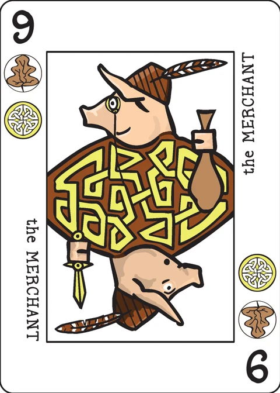

Magnate
a game of city building for 2 players
The Grand Duke, who has no heirs, has decreed that his throne will go whoever does the most to lift up and develop the duchy. You are a successful but common merchant, aiming to buy a noble title by impressing the Grand Duke. His health is failing, so you need to hurry.
Components
In addition to an extended Decktet, the game requires resource tokens and several dice.
Tokens: Resource tokens represent goods of various kinds that can be used to secure deeds or develop property. In the game, there are six kinds of resource: one for each of the six Decktet suits. You'll need about 10 or so of each kind.
Dice: You'll need two ten-sided dice (d10s) and one six-sided die (d6).
Setup
Separate the Pawns and Crowns from the deck.
Set the four Pawns and the Excuse in the middle of the table. Each represents a district of the duchy.
Shuffle the Crowns and deal three to each player. These represent your personal resources. Each player starts with three resource tokens, one matching each of their Crowns.
Deal three cards to each player. The first player takes a turn, and play alternates.
Game play
Each turn, do the following in order: (a) roll for and collect resources, (b) play a card, (c) draw a card. Along the way, you may trade resources and/or develop properties to which you have a deed.
a. Roll the dice
Roll both ten-sided dice. If either die is a 1, immediately resolve taxation. Then, both players collect resources based on the higher of the two dice.
Taxation: Roll the six-sided die to determine which resource is taxed: 1 Moons, 2 Suns, 3 Waves, 4 Leaves, 5 Wyrms, 6 Knots. (These are the suits in the usual order of priority.) Any player who has more than one of that resource must immediately discard all but one. Note that resources already spent to develop properties are not affected. Resolve taxation before collecting resources.
Collect resources: Look at the greater of the two die rolls; if the dice are doubles, you still just collect resources once.
If a 10 is rolled, each player collects one resource matching each of their Crown cards; three resources in all.
If a number between 2 and 9 is rolled (as the higher die) you collect resources for each property of that rank that you have in play. If the property is fully developed, you collect a resource matching each of its suits. If you own a deed to the property but it is not fully developed, you collect one resource token matching one of its suits; your choice. Your opponent collects resources similarly. A player who has no properties matching the number rolled collects no resources.
If a 1 is rolled (a pair of 1s) then players collect one matching resource for each Ace property they have in play.
b. Play a card
Either completely develop a new property, buy a deed for a new property, or sell a card. You must do one of these each turn, and you cannot do more than one.
Completely develop a property: In order to play and complete a property on the same turn, you must discard a number of resource tokens equal to the rank of the card. All the resource tokens must match one of the card's suits, and at least one of each suit must be included. For example, 4 of Waves and Leaves could be developed with 1 Waves resource and 3 Leaves resources, 2 Waves and 2 Leaves resources, or 3 Waves and 1 Leaves resource.
When you develop a property, you must put it in one of the five districts of the duchy. When it is your first property in the district, the property card must share at least one suit symbol with the Pawn that represents that district. If you already have a property in that district, then the new property must share at least one suit symbol with the immediately previous property. You may play any card as your first property in the district represented by the Excuse; subsequent cards must still match the previous property.
Once you have placed a property, you may not move it to a different district. If there is no district in which you could place a property, then you may not develop it at this time.
Developing an Ace costs 3 resources that matches the suit of the Ace.
Note that you may not develop a new property in a district if you have the deed to a partially-developed property in that district; you must complete development on that property before you can develop a new one there.
Purchase a deed: If you cannot afford to completely develop a property this turn, you may purchase the deed for it and develop it over time. The property will not count toward victory if it is not completed before the end of the game. In order to buy a deed, you must spend two resources; one matching each suit on the card. These resource tokens are paid to the bank.
A deed must be placed in a district, with the same restrictions as developed properties; the deeded property must share at least one suit symbol with the Pawn (if it is your first property in that district) or the previous property (otherwise). Once you have a deed to a property, you may not put another deed in that district or develop another property there until the deeded property is fully developed.
You may spend resources to partially develop a property on the same turn you purchase the deed.
Buying a deed can be a good idea for high rank cards. The property may provide some income while you are developing it, and resources spent on it will be safe from taxation. However, buying a deed ultimately adds two to the resource cost of the property. You should not purchase a deed for a rank 2 card, because you could fully develop the property for the same cost.
If you buy a deed for an Ace, it costs one resource matching the suit of the Ace.
Develop properties: At any time after collecting resources, you may spend resources that match one of the card's suits to develop a deed. If the resources are not enough to complete development, put them on the card. When the total spent in development equals the rank of the card, then the property is fully developed.
Example: A deed for the Mill (8 of Waves and Leaves) costs 1 Waves resource and 1 Leaves resource; developing the property will require a total of 8 resources that each may be either Waves or Leaves.
Resources placed on a deed when it is partially developed are not affected by taxation.
Sell a card: You may discard a card from your hand and collect two resources tokens, one matching each suit on the card. If you discard an Ace, then you collect two tokens matching that Ace.
Note that you must play exactly one card on your turn. As such, you may not sell a card in the same turn that you develop a property outright or buy a deed. Conversely, if you do not have the space or resources to buy any of your cards as properties or deeds, then you must sell one of them.
Trade: At any time during your turn, after resolving die rolls but before drawing a card, you may trade resources with the bank. 3 of any one colour of resource may be traded for 1 of any other colour. You may make multiple trades if you have the resources and desire to do so.
c. Draw a card
Draw one card; this ends your turn.
The first time the draw pile is exhausted, shuffle the discard pile and draw from that. The second time the draw pile is exhausted, each player gets one final turn. After that, the Grand Duke dies and the game ends.
Victory
When the game ends, discard the cards remaining in your hand (you should have two left). Discard any deeded properties which you did not finish developing and any resources spent to partially develop them.
In each district, each player totals up the ranks of their developed properties. An Ace counts as one per property with its suit that you have in that district.
Example: Shar has built the Ace of Moons and it is the only Moons property she has in that district; it counts for one. She has built the Ace of Wyrms in another district where she also has the 3, 5, and 8 of Wyrms; the Ace counts for four.
The player with the higher total for that district scores 1 victory point. If the totals in a district are the same, neither player scores for that district. The player with more districts becomes Grand Duke and wins the game.
If there is a tie in districts: Each player totals the ranks of their developed properties in all districts. The player with the higher total wins.
If there is a tie in total properties: The player holding the greatest number of remaining resources wins.
If this is still a tie, then the game is a draw. Both players get to be the next Grand Duke, on alternate days.
The extended deck
Courts: If you decide to use the Court cards, shuffle them into the deck as additional property cards. A player may sell a Court to collect three resource tokens, one matching each suit on the Court card. A player may develop a Court as a property by spending 10 resource tokens matching any of the three suits, with at least one matching each of the three suits. A developed Court card never provides income, but it counts as rank 10 for purposes of determining victory at the end of the game. A deed for a Court would cost three resource tokens, one matching each suit on the Court card.
Appendix: Resource tokens
- There are Decktet suit chips available for purchase.
- Alternately, you can use any tokens that come in six different colors. For a long time, we used plastic stacking counters that come in the Decktet suit colours. Before we got those, we used poker chips.
- You can print and cut out resource tokens [PDF], but cut paper won't be very substantial.
- With just one kind of token - such as go stones or a single color of poker chip - you can let token placement indicate which kind of resource each token represents. You can print out game mats for this purpose.
- With just one kind of token and no extra equipment, you can set up in this way: Line up your Crowns in the middle, to the right of the Pawns (see below). Placing a token next to a Crown then indicates that you have a resource in that suit.
Note on this implementation
Courts are in: this app plays the full extended deck — the 34 property cards (24 numbers, 6 Aces, 4 Courts) with the four Pawns and the Excuse as the five district markers, and the six Crowns dealt three each as personal resources. The Court rules above are implemented exactly (sell for three, develop for ten with one of each suit, a deed costs three, never income, rank 10 at the end).
Two players, one device: exactly two players, passing the device between turns; each hand is hidden behind a "Player N's turn" screen. Tokens and the tableau are open information, as they are on a table.
Dice: the two d10s and the d6 are rolled from a seed kept in the game state, so reloading the page never re-rolls them. The dice stay on screen for the whole turn.
Turn structure: the three phases are explicit — Roll, then Actions (trades, partial developments and exactly one card play, in any order), then Draw. The app refuses to draw before the card play and refuses a second play.
Who a deed blocks: "once you have a deed to a property, you may not put another deed in that district or develop another property there" is read as binding its owner only: your opponent may still place in that district if the suit chain allows. A deeded property counts as placed for chaining.
The app chooses two things the wiki leaves open: (1) when developing outright, it keeps one token of each suit in reserve and spends the rest from your most-held suit; (2) when income comes from an undeveloped deed ("one resource token matching one of its suits; your choice"), it gives you the suit you hold fewest of. Both choices are deterministic and printed in the log.
Completing a deed over time needs no "at least one of each suit" mix — that rule applies only to developing outright. Tokens sitting on a deed are not affected by taxation, as the wiki says.
No bank limit: the components list asks for "about 10 or so" tokens per kind; the app's bank is unlimited, so tokens are plain counters.
Ending: the second exhaustion of the draw pile grants each player one final turn (the player whose draw exhausted it does not get an extra one), then the Grand Duke dies and the final scoring runs automatically, including discarding unfinished deeds and their tokens. If the discard pile happened to be empty at the first exhaustion, the game goes straight to the final turns.
Credits
Original design and development: Cristyn Magnus. Additional development: P.D. Magnus. Playtesting: Nathan Brown, David Van Slyke, Jorge Arroyo.
These rules are copied from the Magnate page of the Decktet wiki (page revision 37, 6 August 2017) so they can be read offline, under the wiki's CC BY-NC-SA 3.0 licence. Cards by P.D. Magnus, same licence.
Further reading: Magnate at BGG